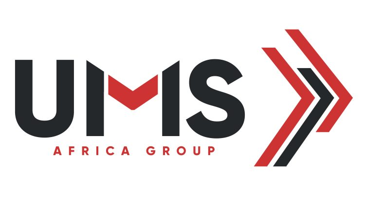

HTML
Niveau avancé
CSS
Niveau avancé
JAVA
Niveau intermédiaire
Python
Niveau débutantPHP
Niveau intermediaire
SQL
(Niveau avancé)Je suis étudiant en BTS SIO SLAM 2eme année passionné par l'informatique. Bienvenue dans mon univers !
HTML
Niveau avancé
CSS
Niveau avancé
JAVA
Niveau intermédiaire
Python
Niveau débutantPHP
Niveau intermediaire
SQL
(Niveau avancé)Anciennement United Mining Supply, est un leader dans la logistique et le transport en Afrique, avec une expertise particulière dans le secteur minier. Avec environ 3000 employés, l'entreprise gère des projets majeurs tels que la Société Minière de Boké (SMB) et le Winning Consortium Simandou (WCS), exploitant les ressources de la Guinée et optimisant les chaînes logistiques. Elle repose sur l'informatique pour optimiser ses opérations logistiques et industrielles. L’informatique assure une coordination efficace des activités, la gestion des ressources humaines, la sécurité des données stratégiques, et la prise de décisions rapides grâce à des outils de reporting. Ton expérience chez UMS met en lumière l’importance de ces systèmes pour garantir la fluidité et la performance des opérations dans un environnement complexe et compétitif.
La cybersécurité regroupe l'ensemble des pratiques, technologies et processus conçus pour protéger les systèmes, réseaux et données contre les cyberattaques. Avec l'augmentation constante des menaces en ligne, elle est devenue un enjeu crucial pour les entreprises, les gouvernements et les particuliers. Elle vise principalement à garantir :
Les cyberattaques prennent plusieurs formes, parmi lesquelles :
Ces attaques peuvent causer des pertes financières, des atteintes à la réputation et des interruptions de service. Une vigilance constante et des stratégies de sécurité robustes sont donc nécessaires.
En février 2024, Change Healthcare, un processeur majeur de prescriptions appartenant à UnitedHealth, a subi une attaque par ransomware. Cette attaque a provoqué une perturbation majeure du système de santé américain pendant plusieurs semaines.
Les cybercriminels ont déployé un ransomware pour chiffrer les données et rendre les systèmes inaccessibles. Ils ont exigé une rançon de 22 millions de dollars, montant que UnitedHealth a fini par payer. Le groupe à l'origine de l'attaque est soupçonné d'avoir des liens avec la Russie.
UnitedHealth a réagi en payant la rançon pour récupérer l'accès à ses systèmes. L'entreprise a également renforcé ses mesures de sécurité pour prévenir de futures attaques similaires.
En janvier 2024, des chercheurs ont détecté une exploitation massive de vulnérabilités zero-day critiques dans les produits d'Ivanti, notamment Connect Secure et Policy Secure. Ces attaques ont été menées par des groupes de menace soutenus par des États-nations, principalement la Chine.
Les attaquants ont tiré parti de failles non corrigées (zero-day) dans les produits Ivanti pour exécuter des attaques d'espionnage et d'autres opérations malveillantes. Ces vulnérabilités ont permis un accès non autorisé à des systèmes sensibles dans des secteurs variés, tels que :
En réaction à cette menace, la Cybersecurity and Infrastructure Security Agency (CISA) des États-Unis a émis une directive d’urgence obligeant les agences fédérales civiles à corriger ces vulnérabilités. Par ailleurs, les pays membres des Five Eyes ont publié un avis conjoint mettant en garde contre cette activité malveillante.